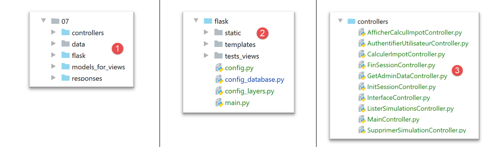
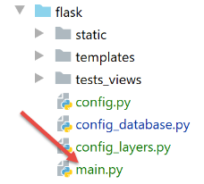
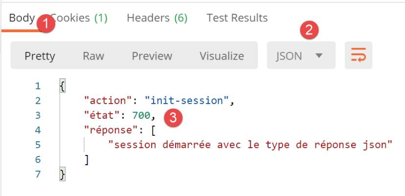
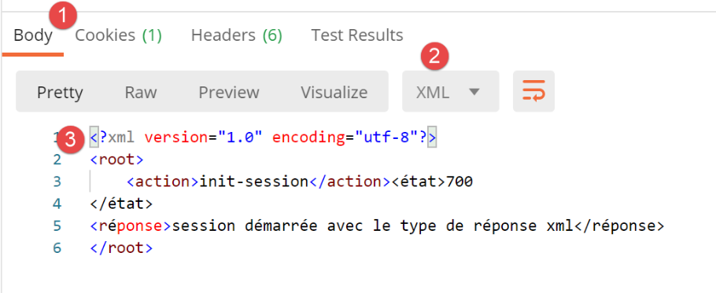
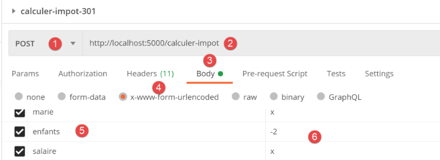
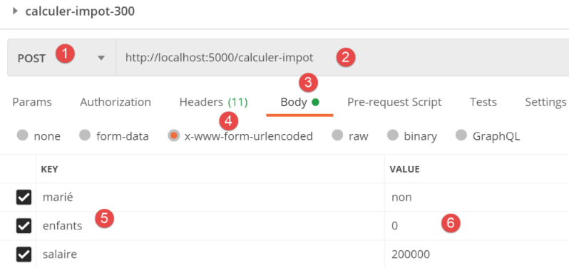
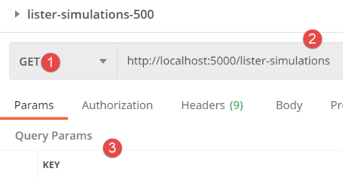
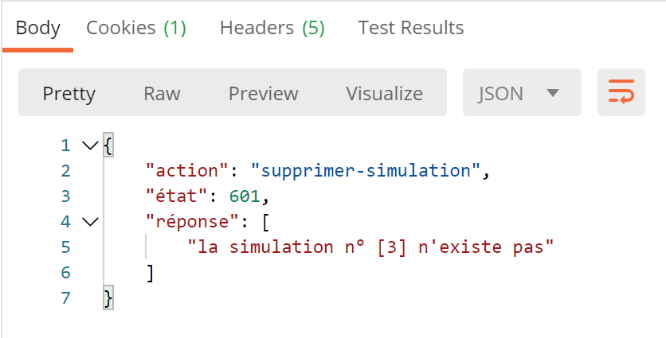
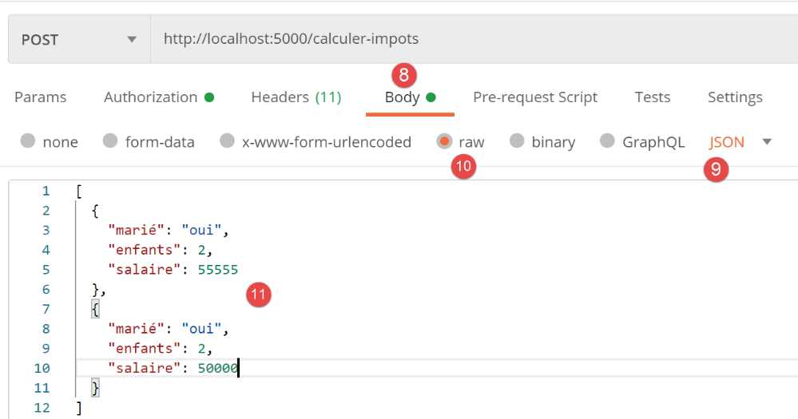

30. تمرين تطبيقي: الإصدار 12
سنقوم في هذا الفصل بكتابة تطبيق ويب يتوافق مع بنية MVC (النموذج-العرض-المحرك). سيكون بإمكان التطبيق تقديم استجاباته بثلاثة تنسيقات: jSON، XML، HTML. هناك فارق كبير في مستوى التعقيد بين ما سنقوم به الآن وما تم إنجازه سابقًا. سنعيد استخدام معظم المفاهيم التي تناولناها حتى الآن، وسنشرح بالتفصيل جميع الخطوات المؤدية إلى التطبيق النهائي.
30.1. بنية MVC
سنقوم بتنفيذ نموذج الهندسة المعمارية المعروف باسم MVC (النموذج – العرض – وحدة التحكم) بالطريقة التالية:
ستتم معالجة طلب العميل على النحو التالي:
- 1 - الطلب
ستكون طلبات URL بالصيغة http://machine:port/action/param1/param2/… وسيستخدم [Contrôleur principal] ملف تكوين لتوجيه الطلب إلى وحدة التحكم الصحيحة. ولذلك، سيستخدم الحقل [action] الموجود في URL. أما باقي أجزاء URL و[param1/param2/…] فهي تتكون من معلمات اختيارية سيتم تمريرها إلى الإجراء. الحرف C في MVC هو هنا السلسلة [Contrôleur principal, Contrôleur / Action]. إذا لم يتمكن أي وحدة تحكم من معالجة الإجراء المطلوب، فسيرد خادم الويب بأن URL المطلوب لم يتم العثور عليه.
- 2 - المعالجة
- يمكن للإجراء المختار [2a] استغلال المعلمات parami التي أرسلها إليه الإجراء [Contrôleur principal]. ويمكن أن تأتي هذه المعلمات من مصدرين:
- المسار [/param1/param2/…] الخاص بـ URL،
- من المعلمات المرسلة في نص طلب العميل؛
- أثناء معالجة طلب المستخدم، قد تحتاج العملية إلى الطبقة [métier] [2b]. بمجرد معالجة طلب العميل، يمكن أن يستدعي هذا الطلب استجابات متنوعة. ومن الأمثلة النموذجية على ذلك:
- استجابة خطأ إذا تعذر معالجة الطلب بشكل صحيح؛
- استجابة تأكيد في الحالات الأخرى؛
- سترسل [Contrôleur / Action] ردها [2c] إلى وحدة التحكم الرئيسية بالإضافة إلى رمز الحالة. وستمثل رموز الحالة هذه بشكل فريد الحالة التي يمر بها التطبيق. وسيكون هذا إما رمز نجاح أو رمز خطأ؛
- 3 - الرد
- حسب ما إذا كان العميل قد طلب استجابة jSON، XML أو HTML، سيقوم [Contrôleur principal] بإنشاء مثيل [3a] لنوع الرد المناسب وسيطلب منه إرسال الرد إلى العميل. وسيقوم [Contrôleur principal] بإرسال كل من الرد ورمز الحالة المقدمين من [Contrôleur / Action] الذي تم تنفيذه؛
- وإذا كان الرد المطلوب من النوع jSON أو XML، فسيقوم الرد المحدد بتنسيق الرد الوارد من [Contrôleur / Action] الذي تم تزويده به وإرساله إلى [3c]. يمكن أن يكون العميل القادر على استغلال هذه الاستجابة عبارة عن برنامج نصي لـ Python على وحدة التحكم أو برنامج نصي لـ JavaScript مضمن في صفحة HTML؛
- إذا كانت الاستجابة المطلوبة من النوع HTML، فستقوم الاستجابة المحددة باختيار إحدى طرق العرض HTML أو [Vuei] باستخدام رمز الحالة الذي تم تزويدها به. وهذا هو العرض V الخاص بـ MVC. يرتبط كل رمز حالة بعرض واحد فقط. سيقوم هذا العرض V بعرض استجابة [Contrôleur / Action] التي تم تنفيذها. وهي تقوم بتنسيق بيانات هذه الاستجابة باستخدام HTML وCSS وJavaScript. وتُسمى هذه البيانات «نموذج العرض». وهو الحرف M في MVC. وعادةً ما يكون العميل هو متصفح؛
الآن، دعونا نوضح العلاقة بين بنية الويب MVC وبنية الطبقات. وفقًا للتعريف الذي نعطيه للنموذج، قد يكون هذان المفهومان مرتبطين أو غير مرتبطين. لنأخذ تطبيق ويب أحادي الطبقة MVC كمثال:

في المثال أعلاه، تضم كل طبقة من طبقات [Contrôleur / Action] جزءًا من الطبقتين [métier] و [dao]. في الطبقة [web]، توجد بالفعل بنية MVC، لكن التطبيق ككل لا يعتمد على بنية متعددة الطبقات. هنا توجد طبقة واحدة فقط، وهي طبقة الويب، التي تتولى كل المهام.
الآن، لننظر إلى بنية ويب متعددة الطبقات:

يمكن تنفيذ الطبقة [web] دون اتباع النموذج MVC. وبذلك تكون لدينا بالفعل بنية متعددة الطبقات، لكن طبقة الويب لا تنفذ النموذج MVC.
على سبيل المثال، في عالم .NET، يمكن تنفيذ الطبقة [web] المذكورةأعلاه يمكن تنفيذها باستخدام ASP.NET و MVC، وبذلك نحصل على بنية متعددة الطبقات تحتوي على طبقة [web] من النوع MVC. وبعد ذلك، يمكن استبدال هذه الطبقة ASP.NET وMVC بطبقة ASP.NET تقليدية (WebForms) مع الحفاظ على بقية (المجال، DAO، برنامج التشغيل) كما هو. وبذلك نحصل على بنية طبقات تحتوي على طبقة [web] التي لم تعد من النوع MVC.
في MVC، ذكرنا أن النموذج M هو نموذج العرض V، c.a.d، أي مجموعة البيانات المعروضة بواسطة العرض V. وهناك تعريف آخر للنموذج M الخاص بـ MVC، وهو:

يعتبر العديد من المؤلفين أن ما يقع على يمين الطبقة [web] يشكل النموذج M الخاص بـ MVC. لتجنب أي غموض، يمكننا أن نتحدث عن:
- عن «نموذج المجال» عند الإشارة إلى كل ما يقع على يمين الطبقة [web]؛
- نموذج العرض عند الإشارة إلى البيانات المعروضة بواسطة عرض V؛
وفيما يلي، عندما نتحدث عن النموذج، فإننا نشير دائمًا إلى نموذج العرض.
30.2. بنية تطبيق العميل/الخادم
سيكون للتطبيق الويب البنية التالية:
- في [1]، سيحتوي خادم الويب على نوعين من العملاء:
- في [2]، عميل وحدة التحكم الذي سيتبادل jSON و XML مع الخادم؛
- في [3]، متصفح سيتلقى HTML من الخادم ويعرضه؛
- يحتفظ خادم الويب [1] بطبقتي [métier] و [dao] من الإصدارات السابقة؛
- سيتم تطوير عميل الويب [2] ليأخذ في الاعتبار خدمات URL الجديدة لتطبيق الويب؛
- يجب كتابة تطبيق HTML الذي يعرضه المتصفح بالكامل؛
سنقوم بتطوير التطبيق على عدة مراحل:
- سنقوم بتطوير إصدار jSON للخادم. سنقوم باختبار خدمات الخادم URL واحدة تلو الأخرى باستخدام عميل Postman. تتيح لنا هذه الطريقة بناء الهيكل الأساسي لخادم الويب دون الاهتمام بـ «الطرق» (=HTML) الخاصة بالتطبيق؛
- بعد اختبار الخادم jSON باستخدام Postman، سنقوم باختباره باستخدام عميل وحدة التحكم؛
- ثم سننتقل إلى إصدار الخادم XML. وقد لاحظنا أن الانتقال من الإصدار jSON إلى الإصدار XML كان أمرًا بسيطًا؛
- وأخيرًا سننتقل إلى إصدار الخادم HTML. سنقوم ببناء بنية MVC وسنحدد طرق العرض المطلوب عرضها. سيتم اختبار التطبيق HTML باستخدام كل من عميل Postman ومتصفح تقليدي؛
30.3. هيكل شجرة كود الخادم

- في [1: الخادم الإلكتروني ككل؛
- في [2]: سنتجاهل في الوقت الحالي المجلدات [static, templates, tests_views] التي تتعلق بإصدار HTML من الخادم. خارج هذه المجلد، سنجد البرنامج النصي الرئيسي [main] وتكوينه؛
- في [3]، نجد وحدات التحكم الخاصة بخادم الويب. وستكون هذه مثيلات لفئات؛
 |  |
- في [4]، ستتم إدارة استجابة الخادم HTTP بواسطة فئات؛
- في [5]، نحتفظ بملف سجلات الخوادم السابقة؛
وعندما نقوم بإنشاء الإصدار HTML من الخادم، ستدخل ملفات أخرى في العملية:
 |  |
- في [6]، العناصر الثابتة للتطبيق HTML؛
- في [7]، قوالب التطبيق HTML المقسمة إلى طرق عرض [9] وأجزاء من طرق العرض [8]؛
- في [9]، الفئات التي تنفذ نماذج العروض؛
30.4. URL الخاصة بخدمة التطبيق
لبناء خادم الويب، سنتبع الخطوات التالية:
- انطلاقًا من طرق عرض التطبيق HTML، سنحدد الإجراءات التي يجب أن ينفذها تطبيق الويب. سنستخدم هنا طرق العرض الفعلية، ولكن يمكن أن تكون مجرد طرق عرض على الورق؛
- انطلاقًا من هذه الإجراءات، سنحدد خدمات التطبيق URL الخاصة بالتطبيق HTML؛
- سنقوم بتنفيذ خدمات URL هذه باستخدام خادم يقدم jSON. وهذا يسمح بتحديد الهيكل الأساسي لخادم الويب دون الحاجة إلى الاهتمام بالصفحات HTML المراد تقديمها. سنقوم باختبار خدمات URL هذه باستخدام Postman؛
- ثم سنقوم باختبار خادمنا jSON باستخدام عميل وحدة التحكم؛
- وبمجرد التحقق من صحة الخادم jSON، سننتقل إلى كتابة التطبيق HTML؛
ستكون الصفحة الأولى هي صفحة المصادقة:

- ستسمى العملية التي تؤدي إلى هذه الصفحة الأولى [init-session] [1]؛
- سيؤدي النقر على الزر [Valider] إلى تشغيل الإجراء [authentifier-utilisateur] مع معلمتين مرسلتين [2-3]؛
عرض حساب الضريبة:

- في [1]، الإجراء [authentifier-utilisateur] الذي أدى إلى هذه العرضة؛
- في [2]، يؤدي النقر على الزر [Valider] إلى تشغيل الإجراء [calculer-impot] مع ثلاث معلمات مرسلة [2-5]؛
- يؤدي النقر على الرابط [6] إلى تشغيل الإجراء [lister-simulations] بدون معلمات؛
- النقر على الرابط [7] يؤدي إلى تشغيل الإجراء [fin-session] بدون معلمات؛
الطريقة الثالثة هي تلك الخاصة بالمحاكاة التي يقوم بها المستخدم المصادق عليه:

- في [3]، الإجراء [lister-simulations] الذي أدى إلى هذه الشاشة؛
- في [2]، يؤدي النقر على الرابط [Supprimer] إلى تشغيل الإجراء [supprimer-simulation] مع معلمة واحدة، وهي رقم المحاكاة المراد حذفها من القائمة؛
- النقر على الرابط [3] يؤدي إلى تشغيل الإجراء [afficher-calcul-impot] بدون معلمات، والذي يعيد عرض شاشة حساب الضريبة؛
- النقر على الرابط [4] يؤدي إلى تشغيل الإجراء [fin-session] بدون معلمات؛
بناءً على هذه المعلومات الأولية، يمكننا تحديد خدمات الخادم المختلفة URL:
الإجراء | الدور | سياق التنفيذ |
/init-session | يُستخدم لتحديد نوع (json، xml، html) الردود المطلوبة | الطلب GET يمكن إرساله في أي وقت |
/authentifier-utilisateur | يسمح أو يمنع المستخدم من تسجيل الدخول | الطلب POST. يجب أن تحتوي الطلب على معلمتين مرسلتين [user, password] لا يمكن إصدارها إلا إذا كان نوع الجلسة (json، xml، html) معروفًا |
/حساب-الضريبة | يقوم بمحاكاة حساب الضريبة | الطلب POST. يجب أن تحتوي الطلب على ثلاثة معلمات مرسلة عبر POST: [marié, enfants, salaire] لا يمكن إرسالها إلا إذا كان نوع الجلسة (json، xml، html) معروفًا وكان المستخدم قد تم توثيقه |
/lister-simulations | طلب عرض قائمة عمليات المحاكاة التي تم إجراؤها منذ بداية الجلسة | الطلب GET. لا يمكن إرسالها إلا إذا كان نوع الجلسة (json، xml، html) معروفًا وكان المستخدم قد تم توثيقه |
/supprimer-simulation/numéro | يحذف محاكاة من قائمة المحاكاة | الطلب GET. لا يمكن إصداره إلا إذا كان نوع الجلسة (json، xml، html) معروفًا وتم توثيق المستخدم |
/عرض-حساب-الضريبة | يعرض الصفحة HTML الخاصة بحساب الضريبة | الطلب GET. لا يمكن إرسالها إلا إذا كان نوع الجلسة (json، xml، html) معروفًا وكان المستخدم قد أتم المصادقة |
/fin-session | ينهي جلسة المحاكاة. | من الناحية الفنية، يتم حذف الجلسة القديمة على الويب وإنشاء جلسة جديدة لا يمكن إصدارها إلا إذا كان نوع الجلسة (json، xml، html) معروفًا وكان المستخدم قد تم توثيقه |
سيتم استخدام رموز الخدمة المختلفة هذه (URL) لكل من الخادم HTML وخوادم jSON أو XML. وستُستخدم اثنتان من URL لخادمي الأخيرين فقط: وهما URL من الإصدار السابق للعميل/خادم الويب التي نعيد استخدامها هنا:
الإجراء | الدور | سياق التنفيذ |
/get-admindata | تُرجع البيانات الضريبية التي تسمح بحساب الضريبة | الاستعلام GET. لا تُستخدم إلا إذا كان نوع الجلسة json أو xml. يجب أن يكون المستخدم قد تمت مصادقته |
/calculer-impots | يقوم بحساب الضريبة لقائمة من دافعي الضرائب تم إرسالها في jSON | الاستعلام GET. يتم استخدامها فقط إذا كان نوع الجلسة هو json أو xml. يجب أن يكون المستخدم قد قام بتوثيق هويته |
ستعمل جميع وحدات التحكم المرتبطة بهذه الإجراءات بنفس الطريقة:
- ستتحقق من معلماتها. وتوجد هذه المعلمات في الكائن:
- [request.path] بالنسبة للمعلمات الموجودة في URL في شكل [/action/param1/param2/…]؛
- في الكائن [request.form] بالنسبة للمعلمات التي يتم إرسالها في [x-www-form-urlencoded] في نص الطلب؛
- في الكائن [request.data] بالنسبة للمعلمات التي يتم إرسالها في jSON في نص الطلب؛
- يشبه المتحكم دالة أو طريقة تتحقق من صحة معلماته. لكن الأمر أكثر تعقيدًا قليلاً بالنسبة للمتحكم:
- قد تكون المعلمات المتوقعة غائبة؛
- المعلمات التي يستردها المتحكم هي سلاسل أحرف. إذا كانت المعلمة المتوقعة رقمًا، فيجب على المتحكم التحقق من أن سلسلة أحرف المعلمة هي بالفعل سلسلة رقم؛
- وبمجرد التحقق من وجود المعلمات المتوقعة وصحة صياغتها، يجب التحقق من صحتها في سياق التنفيذ الحالي. ويوجد هذا السياق في الجلسة. يُعد مثال المصادقة مثالاً على سياق التنفيذ. لا يجب معالجة بعض الإجراءات إلا بعد مصادقة العميل. عادةً ما تشير مفتاح في الجلسة إلى ما إذا كانت هذه المصادقة قد تمت أم لا؛
- وبمجرد إتمام عمليات التحقق السابقة، يمكن للوحدة الثانوية أن تبدأ العمل. وتعتبر عملية التحقق من المعلمات هذه بالغة الأهمية. فلا يمكننا قبول أن يرسل لنا العميل أي شيء في أي لحظة من دورة حياة التطبيق. بل يجب أن نتحكم بشكل كامل في دورة حياة التطبيق؛
- بمجرد الانتهاء من مهمته، يقوم وحدة التحكم الثانوية بإرجاع قاموس يحتوي على المفاتيح [action, état, réponse] إلى وحدة التحكم الرئيسية التي استدعتها:
- [action] هي الإجراء الذي تم تنفيذه للتو؛
- [état] هو رقم مكون من ثلاثة أرقام يشير إلى نتيجة معالجة الإجراء:
- [x00] تشير إلى نجاح المعالجة؛
- [x01] يشير إلى فشل المعالجة؛
- [réponse] هو قاموس النتائج بالصيغة {‘réponse’:objet}. سيكون للكائن هياكل مختلفة حسب الإجراء الذي تمت معالجته؛
سنستعرض الآن مختلف وحدات التحكم، أو ما يعادلها من الإجراءات المختلفة التي تعالجها هذه الوحدات والتي تشكل إيقاع عمل تطبيق الويب.
30.5. تكوين الخادم

تتطابق إعدادات قاعدة البيانات [config_database] وكذلك إعدادات طبقات الخادم [config_layers] مع تلك الموجودة في الإصدارات السابقة. ويظهر في الملف [config] معلومات جديدة:
def configure(config: dict) -> dict:
import os
# الخطوة 1 ------
# مجلد هذا الملف
script_dir = os.path.dirname(os.path.abspath(__file__))
# المسار الجذري
root_dir = "C:/Data/st-2020/dev/python/cours-2020/python3-flask-2020"
# التبعيات
absolute_dependencies = [
# مجلدات المشروع
# BaseEntity، MyException
f"{root_dir}/classes/02/entities",
# InterfaceImpôtsDao، InterfaceImpôtsMétier، InterfaceImpôtsUi
f"{root_dir}/impots/v04/interfaces",
# AbstractImpôtsdao، ImpôtsConsole، ImpôtsMétier
f"{root_dir}/impots/v04/services",
# ImpotsDaoWithAdminDataInDatabase
f"{root_dir}/impots/v05/services",
# AdminData، ImpôtsError، TaxPayer
f"{root_dir}/impots/v04/entities",
# الثوابت، الشرائح
f"{root_dir}/impots/v05/entities",
# مسجل، SendAdminMail
f"{root_dir}/impots/http-servers/02/utilities",
# نصوص برمجية [config_database, config_layers]
script_dir,
# وحدات التحكم
f"{script_dir}/../controllers",
# الردود HTTP
f"{script_dir}/../responses",
# نماذج العروض
f"{script_dir}/../models_for_views",
]
# تحديد مسار النظام
from myutils import set_syspath
set_syspath(absolute_dependencies)
# تبعيات خادم الويب
# وحدات التحكم
from AfficherCalculImpotController import AfficherCalculImpotController
from AuthentifierUtilisateurController import AuthentifierUtilisateurController
from CalculerImpotController import CalculerImpotController
from CalculerImpotsController import CalculerImpotsController
from FinSessionController import FinSessionController
from GetAdminDataController import GetAdminDataController
from InitSessionController import InitSessionController
from ListerSimulationsController import ListerSimulationsController
from MainController import MainController
from SupprimerSimulationController import SupprimerSimulationController
# الاستجابات HTTP
from HtmlResponse import HtmlResponse
from JsonResponse import JsonResponse
from XmlResponse import XmlResponse
# قوالب العروض
from ModelForAuthentificationView import ModelForAuthentificationView
from ModelForCalculImpotView import ModelForCalculImpotView
from ModelForErreursView import ModelForErreursView
from ModelForListeSimulationsView import ModelForListeSimulationsView
# الخطوة 2 ------
# تكوين التطبيق
config.update({
# المستخدمون المصرح لهم باستخدام التطبيق
"users": [
{
"login": "admin",
"password": "admin"
}
],
# ملف السجلات
"logsFilename": f"{script_dir}/../data/logs/logs.txt",
# تكوين الخادم SMTP
"adminMail": {
# خادم SMTP
"smtp-server": "localhost",
# منفذ خادم SMTP
"smtp-port": "25",
# المسؤول
"from": "guest@localhost.com",
"to": "guest@localhost.com",
# موضوع البريد الإلكتروني
"subject": "plantage du serveur de calcul d'impôts",
# تعيين tls إلى True إذا كان الخادم SMTP يتطلب مصادقة، وإلى False في حالة عدم الحاجة إلى ذلك
"tls": False
},
# مدة توقف الخيط بالثواني
"sleep_time": 0,
# الإجراءات المسموح بها ووحدات التحكم الخاصة بها
"controllers": {
# تهيئة جلسة الحساب
"init-session": InitSessionController(),
# مصادقة المستخدم
"authentifier-utilisateur": AuthentifierUtilisateurController(),
# حساب الضريبة في الوضع الفردي
"calculer-impot": CalculerImpotController(),
# حساب الضريبة في الوضع الدفعي
"calculer-impots": CalculerImpotsController(),
# قائمة عمليات المحاكاة
"lister-simulations": ListerSimulationsController(),
# حذف محاكاة
"supprimer-simulation": SupprimerSimulationController(),
# إنهاء جلسة الحساب
"fin-session": FinSessionController(),
# عرض شاشة حساب الضريبة
"afficher-calcul-impot": AfficherCalculImpotController(),
# الحصول على البيانات من مصلحة الضرائب
"get-admindata": GetAdminDataController(),
# وحدة التحكم الرئيسية
"main-controller": MainController()
},
# أنواع الردود المختلفة (json، xml، html)
"responses": {
"json": JsonResponse(),
"html": HtmlResponse(),
"xml": XmlResponse()
},
# تعتمد طرق العرض HTML ونماذجها على الحالة التي يعرضها وحدة التحكم
"views": [
{
# طريقة عرض المصادقة
"états": [
# /init-session نجاح
700,
# فشل عملية /توثيق-المستخدم
201
],
"view_name": "views/vue-authentification.html",
"model_for_view": ModelForAuthentificationView()
},
{
# عرض حساب الضريبة
"états": [
# /تسجيل-دخول-المستخدم-نجاح
200,
# /حساب-الضريبة نجاح
300,
# /حساب-الضريبة فشل
301,
# /عرض-حساب-الضريبة
800
],
"view_name": "views/vue-calcul-impot.html",
"model_for_view": ModelForCalculImpotView()
},
{
# عرض قائمة عمليات المحاكاة
"états": [
# /عرض-قائمة-المحاكاة
500,
# /حذف-المحاكاة
600
],
"view_name": "views/vue-liste-simulations.html",
"model_for_view": ModelForListeSimulationsView()
}
],
# عرض الأخطاء غير المتوقعة
"view-erreurs": {
"view_name": "views/vue-erreurs.html",
"model_for_view": ModelForErreursView()
},
# عمليات إعادة التوجيه
"redirections": [
{
"états": [
400, # /إنهاء-الجلسة بنجاح
],
# إعادة التوجيه إلى
"to": "/init-session/html",
}
],
}
)
# الخطوة 3 ------
# تكوين قاعدة البيانات
import config_database
config["database"] = config_database.configure(config)
# الخطوة 4 ------
# إنشاء مثيلات لطبقات التطبيق
import config_layers
config['layers'] = config_layers.configure(config)
# تقديم التكوين
return config
- حتى السطر 41، نجد الأمور المعتادة؛
- الأسطر 43-66: عند الوصول إلى السطر 43، يتم تعريف مسار Python الخاص بالخادم. يمكن عندئذٍ استيراد تبعيات المشروع:
- الأسطر 45-55: قائمة وحدات التحكم؛
- الأسطر 57-60: قائمة الاستجابات HTTP؛
- الأسطر 62-66: قائمة قوالب العرض؛
- الأسطر 68-189: تكوين التطبيق باستخدام سلسلة من الثوابت؛
- الأسطر 71-98: نحن على دراية بهذه الأسطر التي صادفناها في الإصدارات السابقة؛
- الأسطر 101-122: قاموس العناصر التحكمية:
- المفاتيح هي أسماء الإجراءات؛
- القيم هي مثيل للمتحكم الذي يجب أن يدير هذا الإجراء. يتم إنشاء مثيل واحد فقط لكل متحكم (singleton). سيتم تنفيذ نفس المثيل بواسطة خيوط مختلفة من الخادم. لذلك يجب الانتباه إلى البيانات المشتركة التي قد يرغب كل متحكم في تعديلها؛
- الأسطر 125-129: قاموس الردود الثلاثة المحتملة HTTP:
- المفاتيح هي نوع الاستجابة المطلوب من قبل العميل (jSON، xml، html)؛
- القيم هي مثيل للاستجابة HTTP. يتم إنشاء مثيل واحد فقط لكل مولد استجابة (singleton). سيتم تنفيذ نفس المولد بواسطة خيوط مختلفة على الخادم. لذا يجب الانتباه إلى البيانات المشتركة التي قد يرغب كل مولد في تعديلها؛
- الأسطر 132-186: تكوين طرق العرض HTML. في الوقت الحالي، يتم تجاهل هذه الأسطر؛
- الأسطر 191-202: سبق أن تناولنا هذه الأسطر في الإصدارات السابقة؛
30.6. مسار طلب العميل داخل الخادم

سنتتبع مسار طلب العميل الذي يصل إلى الخادم حتى الرد HTTP الذي يتم إرساله في المقابل. ويتبع هذا المسار مسار الخادم MVC.
30.6.1. النص البرمجي [main]

يتطابق البرنامج النصي [main] في العديد من النقاط مع البرنامج النصي للإصدارات السابقة. ومع ذلك، نورده بالكامل لبدء العمل على أسس سليمة:
# في انتظار معلمة mysql أو pgres
import sys
syntaxe = f"{sys.argv[0]} mysql / pgres"
erreur = len(sys.argv) != 2
if not erreur:
sgbd = sys.argv[1].lower()
erreur = sgbd != "mysql" and sgbd != "pgres"
if erreur:
print(f"syntaxe : {syntaxe}")
sys.exit()
# يتم تكوين التطبيق
import config
config = config.configure({'sgbd': sgbd})
# التبعيات
from flask import request, Flask, session, url_for, redirect
from flask_api import status
from SendAdminMail import SendAdminMail
from myutils import json_response
from Logger import Logger
import threading
import time
from random import randint
from ImpôtsError import ImpôtsError
import os
# إرسال بريد إلكتروني إلى المسؤول
def send_adminmail(config: dict, message: str):
# يتم إرسال بريد إلكتروني إلى مسؤول التطبيق
config_mail = config["adminMail"]
config_mail["logger"] = config['logger']
SendAdminMail.send(config_mail, message)
# التحقق من ملف السجلات
logger = None
erreur = False
message_erreur = None
try:
# مسجل السجلات
logger = Logger(config["logsFilename"])
except BaseException as exception:
# سجل وحدة التحكم
print(f"L'erreur suivante s'est produite : {exception}")
# تدوين الخطأ
erreur = True
message_erreur = f"{exception}"
# تخزين مسجل السجلات في ملف التكوين
config['logger'] = logger
# معالجة الخطأ
if erreur:
# إرسال بريد إلكتروني إلى المسؤول
send_adminmail(config, message_erreur)
# إنهاء التطبيق
sys.exit(1)
# سجل بدء التشغيل
log = "[serveur] démarrage du serveur"
logger.write(f"{log}\n")
print(log)
# استرداد بيانات مصلحة الضرائب
erreur = False
try:
# ستكون «admindata» بيانات على مستوى التطبيق للقراءة فقط
config["admindata"] = config["layers"]["dao"].get_admindata().asdict()
# سجل النجاح
logger.write("[serveur] connexion à la base de données réussie\n")
except ImpôtsError as ex:
# تسجيل الخطأ
erreur = True
# سجل الأخطاء
log = f"L'erreur suivante s'est produite : {ex}"
# وحدة التحكم
print(log)
# ملف السجلات
logger.write(f"{log}\n")
# رسالة بريد إلكتروني إلى المسؤول
send_adminmail(config, log)
# لم يعد الخيط الرئيسي بحاجة إلى مسجل السجلات
logger.close()
# في حالة حدوث خطأ، يتم إيقاف التشغيل
if erreur:
sys.exit(2)
# تطبيق Flask
app = Flask(__name__, template_folder="templates", static_folder="static")
# المفتاح السري للجلسة
app.secret_key = os.urandom(12).hex()
# وحدة التحكم الأمامية
def front_controller() -> tuple:
# معالجة الطلب
logger = None
…
@app.route('/', methods=['GET'])
def index() -> tuple:
# إعادة التوجيه إلى /init-session/html
return redirect(url_for("init_session", type_response="html"), status.HTTP_302_FOUND)
# init-session
@app.route('/init-session/<string:type_response>', methods=['GET'])
def init_session(type_response: str) -> tuple:
# تنفيذ وحدة التحكم المرتبطة بالإجراء
return front_controller()
# توثيق المستخدم
@app.route('/authentifier-utilisateur', methods=['POST'])
def authentifier_utilisateur() -> tuple:
# يتم تنفيذ وحدة التحكم المرتبطة بالإجراء
return front_controller()
# حساب الضريبة
@app.route('/calculer-impot', methods=['POST'])
def calculer_impot() -> tuple:
# يتم تنفيذ وحدة التحكم المرتبطة بالإجراء
return front_controller()
# lister-simulations
@app.route('/lister-simulations', methods=['GET'])
def lister_simulations() -> tuple:
# يتم تنفيذ وحدة التحكم المرتبطة بالإجراء
return front_controller()
# حذف-المحاكاة
@app.route('/supprimer-simulation/<int:numero>', methods=['GET'])
def supprimer_simulation(numero: int) -> tuple:
# يتم تنفيذ وحدة التحكم المرتبطة بالإجراء
return front_controller()
# نهاية الجلسة
@app.route('/fin-session', methods=['GET'])
def fin_session() -> tuple:
# يتم تنفيذ وحدة التحكم المرتبطة بالإجراء
return front_controller()
# عرض-حساب-الضريبة
@app.route('/afficher-calcul-impot', methods=['GET'])
def afficher_calcul_impot() -> tuple:
# يتم تنفيذ وحدة التحكم المرتبطة بالإجراء
return front_controller()
# الحصول على بيانات الإدارة
@app.route('/get-admindata/<int:numero>', methods=['GET'])
def get_admindata() -> tuple:
# يتم تنفيذ وحدة التحكم المرتبطة بالإجراء
return front_controller()
# main فقط
if __name__ == '__main__':
# يتم تشغيل الخادم
app.config.update(ENV="development", DEBUG=True)
app.run(threaded=True)
- الأسطر 1-92: تم تناول جميع هذه الأسطر وشرحها سابقًا؛
- السطر 92: سيقوم الخادم بإدارة جلسة عمل. لذا نحتاج إلى مفتاح سري. سنضع معلومتين لكل مستخدم في جلسة العمل:
- إذا قام المستخدم بالمصادقة بشكل صحيح؛
- في كل مرة يقوم فيها بحساب الضريبة، ستُدرج نتائج هذا الحساب في قائمة سنسميها «قائمة محاكاة المستخدم». وستُخزّن هذه القائمة في الجلسة؛
- الأسطر 100-151: قائمة خدمات الخادم. تعمل الوظائف المرتبطة بها كمرشح: سيتم رفض جميع العناصر غير الموجودة في هذه القائمة من قِبل خادم Flask مع ظهور الخطأ. بمجرد اجتياز هذا التصفية، يتم توجيه الطلب تلقائيًا إلى «Front Controller» الذي يتم تنفيذه بواسطة الدالة [front_controller] في الأسطر 94-98 التي سنعرضها قريبًا؛
- الأسطر 100-103: إدارة المسار [/]. سيكون نقطة الدخول إلى تطبيق الويب هي URL في السطر 107. وفي السطر 103 أيضًا، نقوم بإعادة توجيه العميل إلى URL:
- يتم استيراد الدالة [url_for] في السطر 18. ولها هنا معلمتان:
- المعلمة الأولى هي اسم إحدى وظائف التوجيه، وهي هنا الوظيفة الموجودة في السطر 107. ونلاحظ أن هذه الوظيفة تتوقع معلمة [type_response] التي تمثل نوع الاستجابة (json، xml، html) التي يرغب فيها العميل؛
- المعلمة الثانية تستعيد اسم المعلمة الموجودة في السطر 107، [type_response]، وتعيّن لها قيمة. لو كانت هناك معلمات أخرى، لكنا كررنا العملية لكل منها؛
- وهي تربط URL بالدالة المحددة بواسطة المعلمتين اللتين تم تزويدها بهما. وهنا سينتج عن ذلك URL في السطر 106 حيث يتم استبدال المعلمة بقيمتها [/init-session/html]؛
- تم استيراد الدالة [redirect] في السطر 18. وتتمثل مهمتها في إرسال رأس إعادة توجيه HTTP إلى العميل:
- المعلمة الأولى هي URL التي يجب إعادة توجيه العميل إليها؛
- المعلمة الثانية هي رمز حالة الرد HTTP المرسَل إلى العميل. رمز [status.HTTP_302_FOUND] يشير إلى إعادة توجيه HTTP؛
تقوم الدالة [front_controller] في الأسطر 94-98 بإجراء المعالجات الأولية لطلب العميل:
# وحدة التحكم الأمامية
def front_controller() -> tuple:
# معالجة الطلب
logger = None
try:
# مسجل
logger = Logger(config["logsFilename"])
# يتم تخزينه في ملف تكوين مرتبط بالخيط
thread_config = {"logger": logger}
thread_name = threading.current_thread().name
config[thread_name] = {"config": thread_config}
# تسجيل الطلب
logger.write(f"[ front_controller] requête : {request}\n")
# يتم إيقاف مؤشر الترابط إذا طُلب ذلك
sleep_time = config["sleep_time"]
if sleep_time != 0:
# يكون التوقف عشوائيًا بحيث يتم إيقاف بعض الخيوط دون غيرها
aléa = randint(0, 1)
if aléa == 1:
# تسجيل قبل التوقف المؤقت
logger.write(f"[ front_controller] mis en pause du thread pendant {sleep_time} seconde(s)\n")
# التوقف المؤقت
time.sleep(sleep_time)
# يتم إعادة توجيه الطلب إلى وحدة التحكم الرئيسية
main_controller = config['controllers']["main-controller"]
résultat, status_code = main_controller.execute(request, session, config)
# يتم تسجيل النتيجة المرسلة إلى العميل
log = f"[front_controller] {résultat}\n"
logger.write(log)
# هل حدث خطأ فادح؟
if status_code == status.HTTP_500_INTERNAL_SERVER_ERROR:
# يتم إرسال بريد إلكتروني إلى مسؤول التطبيق
send_adminmail(config, log)
# يتم تحديد النوع المطلوب للرد
if session.get('typeResponse') is None:
# لم يتم تحديد نوع الجلسة بعد — سيكون من النوع jSON
type_response = 'json'
else:
type_response = session['typeResponse']
# يتم إنشاء الرد المراد إرساله
response_builder = config["responses"][type_response]
response, status_code = response_builder \
.build_http_response(request, session, config, status_code, résultat)
# يتم إرسال الرد
return response, status_code
except BaseException as erreur:
# حدث خطأ غير متوقع — يتم تسجيل الخطأ في السجل إن أمكن
if logger:
logger.write(f"[ front_controller] {erreur}")
# يتم إعداد الرد للعميل
résultat = {"réponse": {"erreurs": [f"{erreur}"]}}
# يتم إرسال الرد في jSON
return json_response(résultat, status.HTTP_500_INTERNAL_SERVER_ERROR)
finally:
# يتم إغلاق ملف السجلات إذا كان مفتوحًا
if logger:
logger.close()
- الأسطر 1-57: نحن على دراية بهذا الرمز. فقد كان، على سبيل المثال، رمز الدالة المسماة [main] في البرنامج النصي [main] من الإصدار السابق. وهناك أمر واحد جدير بالملاحظة، وهو وحدة التحكم المستخدمة في الأسطر 25-26:
- السطر 25: يتم استرداد مثيل وحدة التحكم المرتبط بالاسم [main-controller] من التكوين. يتعلق الأمر بالسطور التالية:
# التبعيات الخاصة بخادم الويب
# وحدات التحكم
…
from MainController import MainController
# الإجراءات المسموح بها ووحدات التحكم الخاصة بها
"controllers": {
…,
# وحدة التحكم الرئيسية
"main-controller": MainController()
},
- (تابع)
- السطر 10 أعلاه، نلاحظ أنه يتم استرداد مثيل لفئة؛
- السطر 26: يُطلب من وحدة التحكم [MainController] معالجة الطلب؛
- الأسطر 30-45: يتم إرسال الاستجابة التي قدمها وحدة التحكم [MainController] إلى العميل. سنعود إلى هذه الأسطر لاحقًا؛
تتمثل مهمة الدالة [front_controller] ثم الفئة [MainController] في تنفيذ المهام المشتركة بين جميع الطلبات:
في المخطط أعلاه، ما زلنا في المرحلة 1 من معالجة الطلب. سيواصل وحدة التحكم الرئيسية [MainController] تنفيذ الخطوة 1.
30.6.2. وحدة التحكم الرئيسية [MainController]
تواصل وحدة التحكم الرئيسية [MainController] العمل الذي بدأته الوظيفة [front_controller]:
تقوم جميع وحدات التحكم بتنفيذ الواجهة التالية [InterfaceController] [2]:

from abc import ABC, abstractmethod
from werkzeug.local import LocalProxy
class InterfaceController(ABC):
@abstractmethod
def execute(self, request: LocalProxy, session: LocalProxy, config: dict) -> (dict, int):
pass
- لا تحدد الواجهة [InterfaceController] سوى الطريقة الوحيدة [execute] الموجودة في السطر 8. تتلقى هذه الطريقة ثلاثة معلمات:
- [request]: طلب العميل؛
- [session]: جلسة عمل العميل؛
- [config]: تكوين التطبيق؛
تُرجع الدالة [execute] مجموعة مكونة من عنصرين:
- الأول هو قاموس النتائج بالصيغة {‘action’: action, ‘état’:état, ‘réponse’:résultats}؛
- والعنصر الثاني هو رمز الحالة HTTP الذي يجب إرجاعه إلى العميل؛
تقوم وحدة التحكم الرئيسية [MainController] [1] بتنفيذ واجهة [InterfaceController] بالطريقة التالية:
# استيراد التبعيات
from flask_api import status
from werkzeug.local import LocalProxy
# وحدات التحكم في تطبيق الويب
from InterfaceController import InterfaceController
class MainController(InterfaceController):
def execute(self, request: LocalProxy, session: LocalProxy, config: dict) -> (dict, int):
# استرداد عناصر المسار
params = request.path.split('/')
action = params[1]
# الأخطاء
erreur = False
# يجب معرفة نوع الجلسة قبل تنفيذ بعض الإجراءات
type_response = session.get('typeResponse')
if type_response is None and action != "init-session":
# يتم تسجيل الخطأ
résultat = {"action": action, "état": 101,
"réponse": ["pas de session en cours. Commencer par action [init-session]"]}
erreur = True
# بعض الإجراءات تتطلب المصادقة
user = session.get('user')
if not erreur and user is None and action not in ["init-session", "authentifier-utilisateur"]:
# يتم تسجيل الخطأ
résultat = {"action": action, "état": 101,
"réponse": [f"action [{action}] demandée par utilisateur non authentifié"]}
erreur = True
# هل توجد أخطاء؟
if erreur:
# يتم إرسال رسالة خطأ
return résultat, status.HTTP_400_BAD_REQUEST
else:
# يتم تنفيذ وحدة التحكم المرتبطة بالإجراء
controller = config["controllers"][action]
résultat, status_code = controller.execute(request, session, config)
return résultat, status_code
يقوم وحدة التحكم [MainController] بإجراء الفحوصات الأولية للتحقق من صحة الطلب.
- الأسطر 11-13: يبدأ وحدة التحكم باسترداد الإجراء المطلوب من قبل العميل. تجدر الإشارة إلى أن وحدات التحكم URL الخاصة بالخدمة تأتي بالصيغة [/action/param1/param2/…]، وأن وحدة التحكم URL هذه موجودة ضمن [request.path]؛
- الأسطر 17-23: تُستخدم العملية [init-session] لتهيئة نوع الاستجابة (json، xml، html) الذي يطلبه العميل. يتم تخزين هذه المعلومات في الجلسة المرتبطة بالمفتاح [typeRéponse]. لذا، إذا لم تكن الإجراء هي [init-session]، فيجب أن تحتوي الجلسة على المفتاح [typeRéponse]، وإلا فإن الطلب يعتبر خاطئًا؛
- السطران 21-22: بنية النتيجة التي يعرضها كل وحدة تحكم، وهنا نتيجة خطأ:
- [action]: هو اسم الإجراء الجاري. سيسمح ذلك بالحصول على اسمه عند تسجيل نتيجة الطلب؛
- [état]: هو رمز حالة مكون من ثلاثة أرقام:
- [x00] في حالة النجاح؛
- [x01] في حالة الفشل؛
- [réponse]: هو الرد على الاستعلام. وتختلف طبيعته باختلاف كل استعلام؛
- الأسطر 24-30: تُستخدم العملية [authentifier-utilisateur] لمصادقة المستخدم. في حالة نجاحها، يتم وضع مفتاح [user=True] في جلسة عمل المستخدم. بعض إجراءات الخدمة URL لا يمكن الوصول إليها إلا من قبل مستخدم تمت مصادقته. وهذا ما يتم التحقق منه هنا؛
- السطر 26: لا يمكن للمستخدم الذي لم يتم مصادقته بعد تنفيذ سوى الإجراءات [init-session] و [authentifier-utilisateur]؛
- السطران 28-29: النتيجة التي يجب إرسالها في حالة حدوث خطأ؛
- الأسطر 32-34: إذا حدث أي من الخطأين السابقين، يتم إرسال استجابة الخطأ إلى العميل مع الحالة HTTP 400 BAD REQUEST؛
- الأسطر 35-39: إذا لم يحدث أي خطأ، يتم تمرير المهمة إلى وحدة التحكم المسؤولة عن معالجة الإجراء الجاري. ويتم العثور على مثيلها في تكوين التطبيق؛
تستكمل الفئة [MainController] عمل الدالة [front_controller]: حيث تجمع هاتان العنصران معًا كل ما يمكن تجزئته في معالجة الطلبات، في انتظار اللحظة الأخيرة لتحويل الطلب إلى وحدة تحكم محددة. توزيع الكود بين الدالة [front_controller] والفئة [MainController] هو أمر ذاتي تمامًا. وهنا أردت الحفاظ على ما تم تحقيقه في الإصدار السابق: فقد كانت الدالة [front_controller] موجودة بالفعل تحت الاسم [main]. من الناحية العملية، يمكننا:
- وضع كل شيء في الدالة [front_controller] وإزالة الفئة [MainController]؛
- وضع كل شيء في الفئة [MainController] وإزالة الدالة [front_controller]. وأنا أميل إلى اختيار هذا الحل لأنه يقلل من حجم كود البرنامج النصي الرئيسي [main]؛
30.7. معالجة خاصة بإجراء معين
لنعد إلى بنية التطبيق MVC:
ما زلنا في الخطوة 1 المذكورة أعلاه. إذا لم تحدث أي أخطاء، فستبدأ الخطوة 2. تم توجيه الطلب إلى وحدة التحكم الخاصة بالإجراء المطلوب في الطلب. لنفترض أن هذا الإجراء هو [/init-session] المحدد بواسطة المسار:
# تتم تهيئة الجلسة
@app.route('/init-session/<string:type_response>', methods=['GET'])
def init_session(type_response: str) -> tuple:
# يتم تنفيذ وحدة التحكم المرتبطة بالإجراء
return front_controller()
يرتبط هذا الإجراء بوحدة تحكم في التكوين [config]:
# الإجراءات المسموح بها ووحدات التحكم المرتبطة بها
"controllers": {
# تهيئة جلسة حسابية
"init-session": InitSessionController(),
…
},
وبالتالي، يتولى وحدة التحكم [InitSessionController] (السطر 4) زمام الأمور. وفيما يلي كودها:
from flask_api import status
from werkzeug.local import LocalProxy
from InterfaceController import InterfaceController
class InitSessionController(InterfaceController):
def execute(self, request: LocalProxy, session: LocalProxy, config: dict) -> (dict, int):
# يتم استرداد عناصر المسار
dummy, action, type_response = request.path.split('/')
# لا توجد أخطاء في البداية
erreur = False
# التحقق من نوع الاستجابة
if type_response not in config['responses'].keys():
erreur = True
résultat = {"action": action, "état": 701,
"réponse": [f"paramètre [type={type_response}] invalide"]}
# إذا لم تكن هناك أخطاء
if not erreur:
# يتم وضع نوع الجلسة في جلسة Flask
session['typeResponse'] = type_response
résultat = {"action": action, "état": 700,
"réponse": [f"session démarrée avec le type de réponse {type_response}"]}
return résultat, status.HTTP_200_OK
else:
return résultat, status.HTTP_400_BAD_REQUEST
- السطر 6: مثل وحدات التحكم الأخرى، تقوم وحدة التحكم [InitSessionController] بتنفيذ واجهة [InterfaceController]؛
- السطر 10: وحدة التحكم URL هي من النوع [/init-session/type_response]. يتم استرداد الإجراء [init-session] ونوع الاستجابة المطلوب؛
- السطر 15: لا يمكن أن يكون نوع الاستجابة المطلوب سوى أحد الأنواع الموجودة في تكوين الاستجابات:
# أنواع الاستجابات المختلفة (json، xml، html)
"responses": {
"json": JsonResponse(),
"html": HtmlResponse(),
"xml": XmlResponse()
},
- وإذا لم يكن الأمر كذلك، يتم إعداد رد خطأ 701 (السطر 17)؛
- الأسطر 20-25: في حالة صحة نوع الرد المطلوب؛
- السطر 22: يتم تخزين نوع الاستجابة المطلوب في الجلسة. في الواقع، سيتعين تذكره للاستعلامات التالية؛
- الأسطر 23-24: يتم إعداد استجابة نجاح 700؛
- السطر 25: يتم إرجاع استجابة النجاح إلى الكود المستدعي؛
- السطر 27: في حالة حدوث خطأ، يتم إرجاع استجابة الخطأ إلى الكود المستدعي؛
30.8. إعداد استجابة الخادم HTTP
لنعد إلى بنية التطبيق MVC:
لقد استعرضنا للتو الخطوتين 1 و 2. وقد صادفنا ثلاثة رموز حالة:
- 700: نجحت عملية /init-session؛
- 701: فشل /init-session؛
- 101: طلب غير صالح إما لأن الجلسة لم يتم تهيئتها أو لأن المستخدم لم يتم توثيقه؛
دعونا نستعرض كيف سيتم إرسال استجابة الخادم إلى العميل خلال الخطوة 3 أعلاه. يحدث ذلك في الدالة [front_controller] التابعة للنص البرمجي [main]:
# وحدة التحكم الأمامية
def front_controller() -> tuple:
# معالجة الطلب
logger = None
try:
# مسجل
logger = Logger(config["logsFilename"])
# تخزينه في ملف تكوين مرتبط بالخيط
thread_config = {"logger": logger}
thread_name = threading.current_thread().name
config[thread_name] = {"config": thread_config}
# تسجيل الطلب
logger.write(f"[ front_controller] requête : {request}\n")
# يتم إيقاف مؤشر الترابط إذا طُلب ذلك
sleep_time = config["sleep_time"]
if sleep_time != 0:
# يكون التوقف عشوائيًا بحيث يتم إيقاف بعض الخيوط دون غيرها
aléa = randint(0, 1)
if aléa == 1:
# تسجيل قبل التوقف المؤقت
logger.write(f"[ front_controller] mis en pause du thread pendant {sleep_time} seconde(s)\n")
# التوقف المؤقت
time.sleep(sleep_time)
# يتم إعادة توجيه الطلب إلى وحدة التحكم الرئيسية
main_controller = config['controllers']["main-controller"]
résultat, status_code = main_controller.execute(request, session, config)
# يتم تسجيل النتيجة المرسلة إلى العميل
log = f"[front_controller] {résultat}\n"
logger.write(log)
# هل حدث خطأ فادح؟
if status_code == status.HTTP_500_INTERNAL_SERVER_ERROR:
# يتم إرسال بريد إلكتروني إلى مسؤول التطبيق
send_adminmail(config, log)
# يتم تحديد النوع المطلوب للرد
if session.get('typeResponse') is None:
# لم يتم تحديد نوع الجلسة بعد — سيكون من النوع jSON
type_response = 'json'
else:
type_response = session['typeResponse']
# يتم إنشاء الرد المراد إرساله
response_builder = config["responses"][type_response]
response, status_code = response_builder \
.build_http_response(request, session, config, status_code, résultat)
# يتم إرسال الرد
return response, status_code
except BaseException as erreur:
# حدث خطأ غير متوقع — يتم تسجيل الخطأ في السجل إن أمكن
if logger:
logger.write(f"[ front_controller] {erreur}")
# يتم إعداد الرد للعميل
résultat = {"réponse": {"erreurs": [f"{erreur}"]}}
# يتم إرسال الرد في jSON
return json_response(résultat, status.HTTP_500_INTERNAL_SERVER_ERROR)
finally:
# يتم إغلاق ملف السجلات إذا كان مفتوحًا
if logger:
logger.close()
- نحن الآن في السطر 26: أرجعت وحدة التحكم الرئيسية استجابة الخطأ؛
- الأسطر 27-29: بغض النظر عن رد وحدة التحكم الرئيسية (نجاح أو فشل)، يتم تسجيل هذا الرد في ملف السجلات؛
- الأسطر 30-33: كما في الإصدارات السابقة، إذا كان الحالة HTTP هي [500 INTERNAL SERVER ERROR]، يتم إرسال بريد إلكتروني إلى مسؤول التطبيق مع سجل الخطأ؛
- الأسطر 34-39: سيتم إرسال الاستجابة HTTP، وستُدرج النتيجة التي قدمها وحدة التحكم في نص هذه الاستجابة. علينا معرفة الشكل (json، xml، html) الذي يريد العميل أن تكون عليه هذه الاستجابة. نبحث عن نوع الرد المطلوب في الجلسة. إذا لم يكن موجودًا، فإننا نحدد هذا النوع بشكل تعسفي بـ jSON؛
- الأسطر 40-43: يتم إنشاء الرد HTTP؛
في ملف التكوين، تم ربط كل نوع من أنواع الردود (json، xml، html) بمثيل لفئة:
# أنواع الردود المختلفة (json، xml، html)
"responses": {
"json": JsonResponse(),
"html": HtmlResponse(),
"xml": XmlResponse()
},
توجد فئات الردود في المجلد [responses] ضمن شجرة المجلدات الخاصة بالخادم:

تقوم كل فئة استجابة بتنفيذ الواجهة التالية: [InterfaceResponse]:
from abc import ABC, abstractmethod
from flask.wrappers import Response
from werkzeug.local import LocalProxy
class InterfaceResponse(ABC):
@abstractmethod
def build_http_response(self, request: LocalProxy, session: LocalProxy, config: dict, status_code: int,
résultat: dict) -> (Response, int):
pass
- الأسطر 8-11: تحدد الواجهة [InterfaceResponse] طريقة واحدة هي [build_http_response] ذات المعلمات التالية:
- [request, session, config]: هذه هي المعلمات التي يتلقاها وحدة التحكم الخاصة بالإجراء؛
- [résultat, status_code]: هذه هي النتائج التي ينتجها وحدة التحكم في الإجراء؛
سنعرض الاستجابة jSON. يتم إنتاجها بواسطة الفئة [JsonResponse] التالية:
import json
from flask import make_response
from flask.wrappers import Response
from werkzeug.local import LocalProxy
from InterfaceResponse import InterfaceResponse
class JsonResponse(InterfaceResponse):
def build_http_response(self, request: LocalProxy, session: LocalProxy, config: dict, status_code: int,
résultat: dict) -> (Response, int):
# النتائج: قاموس النتائج
# status_code: رمز حالة الرد HTTP
# يتم إرجاع الرد HTTP
response = make_response(json.dumps(résultat, ensure_ascii=False))
response.headers['Content-Type'] = 'application/json; charset=utf-8'
return response, status_code
نحن على دراية بهذا الرمز الذي صادفناه مرات عديدة. إنه رمز الدالة [json_response] التابعة للوحدة النمطية [myutils].
30.9. الاختبارات الأولية
في الكود الذي درسناه، صادفنا ثلاثة رموز حالة:
- 700: نجحت عملية /init-session؛
- 701: فشل /init-session؛
- 101: طلب غير صالح إما لأن الجلسة لم يتم تهيئتها أو لأن المستخدم لم يتم توثيقه؛
سنحاول الحصول عليها باستخدام جلسة jSON.
- نقوم بتشغيل خادم الويب، و SGBD، وخادم البريد الإلكتروني؛
- نقوم بتشغيل عميل Postman؛
الاختبار 1
نعرض أولاً طلبًا غير صالح لأن الجلسة لم يتم تهيئتها:

- [1-2]: الاستعلام [POST http://localhost:5000/authentifier-utilisateur] هو مسار صالح:
# المصادقة على المستخدم
@app.route('/authentifier-utilisateur', methods=['POST'])
def authentifier_utilisateur() -> tuple:
# يتم تنفيذ وحدة التحكم المرتبطة بالإجراء
return front_controller()
ولكنها لا تُقبل إلا إذا تم تهيئة الجلسة مسبقًا باستخدام الإجراء [/init-session].
لنقم بتنفيذ الاستعلام ونرى النتيجة التي أرسلها الخادم:

- [1-2]: حصلنا على استجابة jSON. عندما لا يكون نوع الاستجابة قد تم تحديده بعد من قبل العميل، يستخدم الخادم jSON للرد؛
- [3-5]: قاموس الرد jSON؛
- [action]: الإجراء الذي تم تنفيذه؛
- [état]: رمز حالة الرد. يشير الرمز [x01] إلى وجود خطأ؛
- [réponse]: تتناسب مع كل إجراء. وهي تحتوي هنا على رسالة خطأ؛
الآن لنقم ببدء جلسة عمل باستخدام نوع استجابة غير صحيح:

- [1-2] هو مسار صحيح:
# بدء الجلسة
@app.route('/init-session/<string:type_response>', methods=['GET'])
def init_session(type_response: str) -> tuple:
# يتم تنفيذ وحدة التحكم المرتبطة بالإجراء
return front_controller()
وبالتالي، ستدخل هذه الطلبات إلى نفق معالجة الطلبات الخاص بالخادم MVC. ومع ذلك، من المفترض أن يتم رفضها أثناء هذه المعالجة لأن نوع الجلسة المطلوب غير صحيح.
والرد هو كما يلي:

- في [4]، رمز خطأ [x01]؛
- في [5]، تفسير الخطأ؛
الآن، لنقم ببدء جلسة jSON:

الرد هو كما يلي:

الآن، لنبدأ جلسة XML. سيتم استبدال الرد jSON برد XML الذي تم إنشاؤه بواسطة الفئة [XmlResponse] التالية:
import xmltodict
from flask import make_response
from flask.wrappers import Response
from werkzeug.local import LocalProxy
from InterfaceResponse import InterfaceResponse
from Logger import Logger
class XmlResponse(InterfaceResponse):
def build_http_response(self, request: LocalProxy, session: LocalProxy, config: dict, status_code: int,
résultat: dict) -> (Response, int):
# النتائج: قاموس النتائج
# status_code: رمز حالة الاستجابة HTTP
# النتيجة: القاموس المراد تحويله إلى سلسلة XML
xml_string = xmltodict.unparse({"root": résultat})
# يتم إرجاع الرد HTTP
response = make_response(xml_string)
response.headers['Content-Type'] = 'application/xml; charset=utf-8'
return response, status_code
هذا كود نعرفه، وهو كود الدالة [xml_response] التابعة للوحدة النمطية المشتركة [myutils].
نقوم بتهيئة جلسة عمل XML:

وتكون نتيجة الخادم كما يلي:

نحصل على نفس الرد الذي حصلنا عليه في jSON، لكن هذه المرة يأتي الرد في صيغة XML.
30.10. الإجراء [authentifier-utilisateur]
تسمح العملية [authentifier-utilisateur] بمصادقة المستخدم الذي يرغب في استخدام تطبيق حساب الضريبة. ويتم تعريف مسارها على النحو التالي في البرنامج النصي [main]:
# توثيق المستخدم
@app.route('/authentifier-utilisateur', methods=['POST'])
def authentifier_utilisateur() -> tuple:
# يتم تنفيذ وحدة التحكم المرتبطة بالإجراء
return front_controller()
ينتظر الخادم معلمتين مرسلتين عبر البوست:
- [user]: معرّف المستخدم؛
- [password]: كلمة المرور الخاصة به؛
يتم تحديد قائمة المستخدمين المصرح لهم في التكوين [config]:
# المستخدمون المصرح لهم باستخدام التطبيق
"users": [
{
"login": "admin",
"password": "admin"
}
],
هنا، لدينا قائمة مكونة من عنصر واحد.
يتم معالجة الإجراء [authentifier-utilisateur] بواسطة وحدة التحكم [AuthentifierUtilisateurController] التالية:
from flask_api import status
from werkzeug.local import LocalProxy
from InterfaceController import InterfaceController
from Logger import Logger
class AuthentifierUtilisateurController(InterfaceController):
def execute(self, request: LocalProxy, session: LocalProxy, config: dict) -> (dict, int):
# يتم استرداد عناصر المسار
dummy, action = request.path.split('/')
# معلمات POST
post_params = request.form
# رمز حالة الاستجابة HTTP
status_code = None
# في البداية لا توجد أخطاء
erreur = False
erreurs = []
# يلزم وجود POST بمعلمتين
if len(post_params) != 2:
erreur = True
status_code = status.HTTP_400_BAD_REQUEST
erreurs.append("méthode POST requise, paramètre [action] dans l'URL, paramètres postés [user, password]")
if not erreur:
# يتم استرداد المعلمات من POST
# المعلمة [user]
user = post_params.get("user")
if user is None:
erreur = True
erreurs.append("paramètre [user] manquant")
# المعلمة [password]
password = post_params.get("password")
if password is None:
erreur = True
erreurs.append("paramètre [password] manquant")
# خطأ؟
if erreur:
status_code = status.HTTP_400_BAD_REQUEST
# خطأ؟
if not erreur:
# يتم التحقق من صحة الزوج (اسم المستخدم، كلمة المرور)
users = config['users']
i = 0
nbusers = len(users)
trouvé = False
while not trouvé and i < nbusers:
trouvé = user == users[i]["login"] and password == users[i]["password"]
i += 1
# تم العثور عليه؟
if not trouvé:
# يتم تسجيل الخطأ
erreur = True
status_code = status.HTTP_401_UNAUTHORIZED
erreurs.append(f"Echec de l'authentification")
else:
# يتم تسجيل العثور على المستخدم في الجلسة
session["user"] = True
# انتهى الأمر
if not erreur:
# العودة دون أخطاء
résultat = {"action": action, "état": 200, "réponse": f"Authentification réussie"}
return résultat, status.HTTP_200_OK
else:
# العودة مع وجود خطأ
return {"action": action, "état": 201, "réponse": erreurs}, status_code
- السطر 14: يتم استرداد معلمات POST؛
- السطر 19: قائمة الأخطاء التي تم العثور عليها في الطلب؛
- الأسطر 20-24: يتم التحقق من وجود معلمتين تم إرسالهما بالفعل؛
- الأسطر 27-31: يتم التحقق من وجود المعلمة [users]؛
- الأسطر 32-36: يتم التحقق من وجود المعلمة [password]؛
- الأسطر 38-39: إذا كانت المعلمات المرسلة خاطئة، يتم إعداد استجابة HTTP 400 BAD REQUEST؛
- الأسطر 40-58: يتم التحقق من أن بيانات التعريف [user, password] تخص مستخدمًا مخولًا باستخدام التطبيق؛
- الأسطر 51-55: إذا لم يكن المستخدم (user, password) مخولًا باستخدام التطبيق، يتم إعداد استجابة HTTP 401 UNAUTHORIZED؛
- الأسطر 56-58: إذا كان مصرحًا له، يتم تسجيل أنه قد أجرى المصادقة باستخدام المفتاح [user] في الجلسة؛
تجدر الإشارة إلى أنه إذا تم توثيق المستخدم باستخدام بيانات اعتماد [identifiants1] وفشل في التوثيق باستخدام بيانات اعتماد [identifiants2]، فإنه يظل مع ذلك موثقًا باستخدام بيانات اعتماد [identifiants1].
لنقم بإجراء اختبارات باستخدام Postman:
- نقوم بتشغيل خادم الويب، وSGBD، وخادم البريد الإلكتروني؛
- باستخدام عميل Postman:
- نبدأ جلسة jSON؛
- ثم نقوم بتوثيق الهوية؛
فيما يلي حالات مختلفة.
الحالة 1: POST بدون معلمات مرسلة

- في [3-5]، لا يحتوي POST على نص؛
نتيجة الاستعلام هي كما يلي:

- في [2]، حصلنا على استجابة HTTP 400 BAD REQUEST؛
- عند إدخال [5]، حصلنا على رمز خطأ [201]؛
الحالة 2: POST مع بيانات اعتماد خاطئة

- في [6]، بيانات الاعتماد خاطئة؛
يرسل الخادم الرد التالي:

- في [2]، الرد HTTP 401 UNAUTHORIZED؛
- في حالة [5]، يتم إرسال استجابة الخطأ؛
الحالة 2: POST مع بيانات اعتماد صحيحة

- إلى [6]، بيانات الاعتماد صحيحة؛
رد الخادم هو كما يلي:
- في [2]، رد HTTP 200 OK؛

- في [5]، رد النجاح؛
30.11. الإجراء [calculer_impot]
تسمح العملية [calculer_impot] بحساب ضريبة أحد دافعي الضرائب. ويتم تحديد مسارها على النحو التالي في البرنامج النصي [main]:
# حساب الضريبة
@app.route('/calculer-impot', methods=['POST'])
def calculer_impot() -> tuple:
# يتم تنفيذ وحدة التحكم المرتبطة بالإجراء
return front_controller()
ينتظر الخادم ثلاثة معلمات مرسلة عبر البوست:
- [marié]: نعم / لا؛
- [enfants]: عدد أطفال المكلف؛
- [salaire]: الراتب السنوي للمكلف؛
يقوم المراقب [CalculerImpotController] بمعالجة الإجراء [calculer_impot]:
import re
from flask_api import status
from werkzeug.local import LocalProxy
from InterfaceController import InterfaceController
from TaxPayer import TaxPayer
class CalculerImpotController(InterfaceController):
def execute(self, request: LocalProxy, session: LocalProxy, config: dict) -> (dict, int):
# يتم استرداد عناصر المسار
dummy, action = request.path.split('/')
# لا توجد أخطاء في البداية
erreur = False
erreurs = []
# معلمات POST
post_params = request.form
# يلزم وجود POST بثلاثة معلمات
if len(post_params) != 3:
erreur = True
erreurs.append(
"méthode POST requise avec les paramètres postés [marié, enfants, salaire]")
# يتم تحليل المعلمات المرسلة
if not erreur:
# المعلمة متزوجة
marié = post_params.get("marié")
if marié is None:
erreurs.append("paramètre [marié] manquant")
else:
# هل المعلمة صالحة؟
marié = marié.lower()
if marié != "oui" and marié != "non":
erreur = True
erreurs.append(f"valeur [{marié}] invalide pour le paramètre [marié (oui/non)]")
# المعلمة [enfants]
enfants = post_params.get("enfants")
if enfants is None:
erreur = True
erreurs.append("paramètre [enfants] manquant")
else:
# هل المعلمة صالحة؟
enfants = enfants.strip()
match = re.match(r"\d+", enfants)
if not match:
erreur = True
erreurs.append(f"valeur [{enfants}] invalide pour le paramètre [enfants (entier>=0)]")
# معلمة الراتب
salaire = post_params.get("salaire")
if salaire is None:
erreur = True
erreurs.append("paramètre [salaire] manquant")
else:
# هل المعلمة صالحة؟
salaire = salaire.strip()
match = re.match(r"\d+", salaire)
if not match:
erreur = True
erreurs.append(f"valeur [{salaire}] invalide pour le paramètre [salaire (entier>=0)]")
# هل هناك خطأ؟
if erreur:
status_code = status.HTTP_400_BAD_REQUEST
résultat = {"action": action, "état": 301, "réponse": erreurs}
# يتم إرجاع النتيجة
return résultat, status_code
# حساب الضريبة
# استرداد الطبقة [métier] والقاموس [adminData]
métier = config["layers"]["métier"]
admin_data = config["admindata"]
# حساب الضريبة
taxpayer = TaxPayer().fromdict({'marié': marié, 'enfants': enfants, 'salaire': salaire})
métier.calculate_tax(taxpayer, admin_data)
# رقم المحاكاة
id_simulation = session.get('id_simulation', 0)
id_simulation += 1
session['id_simulation'] = id_simulation
# يتم إدراج النتيجة في الجلسة في شكل قاموس TaxPayer
simulation = taxpayer.fromdict({'id': id_simulation}).asdict()
# يتم إضافة النتيجة إلى قائمة عمليات المحاكاة التي تم إجراؤها بالفعل وإدراجها في الجلسة
simulations = session.get("simulations", [])
simulations.append(simulation)
session["simulations"] = simulations
# النتيجة
résultat = {"action": action, "état": 300, "réponse": simulation}
status_code = status.HTTP_200_OK
# يتم عرض النتيجة
return résultat, status_code
- السطر 13: يتم استرداد اسم الإجراء الجاري؛
- السطر 17: يتم تجميع الأخطاء في قائمة؛
- السطر 19: يتم استرداد المعلمات المرسلة. يتم إرسال هذه المعلمات في شكل [x-www-form-urlencoded]، ولهذا السبب يتم استردادها في [request.form]. ولو تم إرسالها في صيغة jSON، لكنا استرجعناها في صيغة [request.data]؛
- الأسطر 21-24: يتم التحقق من وجود ثلاث معلمات مرسلة بالفعل؛
- الأسطر 27-36: التحقق من وجود وصحة المعلمة المرسلة [marié]؛
- الأسطر 37-48: التحقق من وجود وصحة المعلمة المرسلة [enfants]؛
- الأسطر 49-60: التحقق من وجود وصحة المعلمة المرسلة [salaire]؛
- الأسطر 62-66: في حالة وجود خطأ، يتم إرسال رد خطأ 400 BAD REQUEST مع رمز الحالة [301]؛
- الأسطر 69-71: إذا لم يكن هناك خطأ، يتم التحضير لحساب الضريبة. ولذلك،
- السطر 70: يتم استرداد مرجع من الطبقة [métier]؛
- السطر 71: يتم استرداد بيانات مصلحة الضرائب من إعدادات الخادم؛
- الأسطر 72-74: يتم حساب ضريبة المكلف؛
- الأسطر 75-77: يتم حساب عدد عمليات حساب الضريبة التي أجراها المستخدم؛
- السطر 76: يتم استرداد رقم آخر عملية حساب تم إجراؤها خلال الجلسة. ويُطلق هنا على نتيجة عملية الحساب اسم [simulation]؛
- السطر 77: يتم زيادة رقم آخر محاكاة؛
- السطر 78: يتم إعادة تخزين هذا الرقم في الجلسة؛
- الأسطر 79-84: لمتابعة الحسابات التي أجراها المستخدم، سنضع في جلسته قائمة بالمحاكاة التي أجراها؛
- السطر 80: ستكون المحاكاة عبارة عن قاموس لكائن TaxPayer، حيث ستكون قيمة الخاصية [id] هي رقم المحاكاة؛
- الأسطر 82-84: تُضاف المحاكاة الحالية إلى قائمة المحاكاة الموجودة في الجلسة؛
- السطران 86-87: يتم إعداد استجابة HTTP تدل على النجاح؛
- السطر 90: يتم إرجاع النتيجة؛
لنقم ببعض الاختبارات: يتم تشغيل خادم الويب، و SGBD، وخادم البريد الإلكتروني، وعميل Postman.
الحالة 1: إجراء حساب ضريبي في حين أن الجلسة لم يتم تهيئتها

الرد هو كما يلي:

الحالة 2: إجراء حساب ضريبي دون المصادقة
نبدأ أولاً بتشغيل جلسة عمل jSON باستخدام [/init-session/json]. ثم نُجري نفس الاستعلام الذي أجريناه سابقًا. وتكون الإجابة عندئذٍ كما يلي:

الحالة 3: إجراء حساب الضريبة مع وجود معلمات ناقصة
نقوم بتهيئة جلسة jSON، ونقوم بتوثيق الهوية، ثم نرسل الاستعلام التالي:

- في [5]، المعلمة [marié] مفقودة؛
والرد هو كما يلي:
الحالة 4: إجراء حساب ضريبي باستخدام معلمات خاطئة


رد الخادم هو كما يلي:

الحالة 4: إجراء حساب الضريبة باستخدام معلمات صحيحة

رد الخادم هو كما يلي:

30.12. الإجراء [lister-simulations]
تتيح العملية [lister-simulations] للمستخدم الاطلاع على قائمة عمليات المحاكاة التي أجراها منذ بداية الجلسة. ويتم تحديد مسارها على النحو التالي في البرنامج النصي [main]:
# قائمة-المحاكاة
@app.route('/lister-simulations', methods=['GET'])
def lister_simulations() -> tuple:
# يتم تنفيذ وحدة التحكم المرتبطة بالإجراء
return front_controller()
لا يتوقع الخادم أي معلمات. تتم معالجة الإجراء [lister-simulations] بواسطة وحدة التحكم [ListerSimulationsController] التالية:
from flask_api import status
from werkzeug.local import LocalProxy
from InterfaceController import InterfaceController
class ListerSimulationsController(InterfaceController):
def execute(self, request: LocalProxy, session: LocalProxy, config: dict) -> (dict, int):
# استرداد عناصر المسار
dummy, action = request.path.split('/')
# يتم استرداد قائمة عمليات المحاكاة في الجلسة
simulations = session.get("simulations", [])
# يتم عرض النتيجة
return {"action": action, "état": 500,
"réponse": simulations}, status.HTTP_200_OK
- السطر 13: يتم أخذ قائمة عمليات المحاكاة من الجلسة؛
- السطران 15-16: يتم إرجاع استجابة بنجاح؛
لنقم بإجراء اختبار Postman التالي:
- نبدأ جلسة jSON؛
- نقوم بتوثيق الهوية؛
- نقوم بإجراء حسابين للضريبة؛
- نطلب قائمة عمليات المحاكاة؛
الطلب هو كما يلي:
- في [3]، لا توجد أي معلمات؛

رد الخادم هو كما يلي:

- في [4]، قائمة عمليات المحاكاة الخاصة بالمستخدم؛
30.13. الإجراء [supprimer-simulation]
تسمح العملية [supprimer-simulation] للمستخدم بحذف إحدى عمليات المحاكاة من قائمة عمليات المحاكاة الخاصة به. ويتم تعريف مسارها على النحو التالي في البرنامج النصي [main]:
# حذف المحاكاة
@app.route('/supprimer-simulation/<int:numero>', methods=['GET'])
def supprimer_simulation(numero: int) -> tuple:
# يتم تنفيذ وحدة التحكم المرتبطة بالإجراء
return front_controller()
ينتظر الخادم معلمة واحدة، وهي رقم المحاكاة المراد حذفها. تتم معالجة الإجراء [supprimer-simulation] بواسطة وحدة التحكم [SupprimerSimulationController] التالية:
from flask_api import status
from werkzeug.local import LocalProxy
from InterfaceController import InterfaceController
class SupprimerSimulationController(InterfaceController):
def execute(self, request: LocalProxy, session: LocalProxy, config: dict) -> (dict, int):
# يتم استرداد عناصر المسار
dummy, action, numéro = request.path.split('/')
# المعلمة [numéro] هي عدد صحيح موجب أو صفر وفقًا لمسارها
numéro = int(numéro)
# يجب أن تكون المحاكاة id=رقم موجودة في قائمة المحاكاة
simulations = session.get("simulations", [])
liste_simulations = list(filter(lambda simulation: simulation['id'] == numéro, simulations))
if not liste_simulations:
msg_erreur = f"la simulation n° [{numéro}] n'existe pas"
# يتم عرض الخطأ
return {"action": action, "état": 601, "réponse": [msg_erreur]}, status.HTTP_400_BAD_REQUEST
# حذف المحاكاة id=رقم
simulation = liste_simulations.pop(0)
simulations.remove(simulation)
# إعادة المحاكاة إلى الجلسة
session["simulations"] = simulations
# عرض النتيجة
return {"action": action, "état": 600, "réponse": simulations}, status.HTTP_200_OK
- السطر 10: يتم استرداد عنصري مسار الطلب. يتم استردادهما كسلسلة أحرف؛
- السطر 13: يتم تحويل المعلمة [numéro] إلى عدد صحيح. ونعلم أن ذلك ممكن بسبب توقيع مسارها،
@app.route('/supprimer-simulation/<int:numero>', methods=['GET'])
كما نعلم أنه عدد صحيح >=0. فلا يمكن في الواقع أن يكون هناك URL أو [/supprimer-simulation/-4]. حيث يرفض خادم Flask هذه القيم؛
- السطر 15: نسترد قائمة عمليات المحاكاة من الجلسة؛
- السطر 16: باستخدام الدالة [filter]، نبحث عن المحاكاة التي لها id==الرقم. نحصل على كائن [filter] الذي نحوله إلى النوع [list]؛
- الأسطر 17-20: إذا لم يُرجع المرشح أي نتائج، فهذا يعني أن المحاكاة المراد حذفها غير موجودة. يتم إرجاع استجابة خطأ تشير إلى ذلك؛
- الأسطر 21-23: يتم حذف المحاكاة التي أعادها المرشح؛
- السطر 25: يتم إعادة إدراج قائمة المحاكاة الجديدة في الجلسة؛
- السطر 27: يتم إرجاع قائمة المحاكاة الجديدة في الرد؛
نجري اختبارًا للنجاح واختبارًا للفشل. نقوم بإجراء محاكاة ثم نطلب قائمة المحاكاة:

- تحمل عمليات المحاكاة هنا الرقمين 2 و3؛
نطلب حذف المحاكاة التي تحمل الرقم 3.

والإجابة هي كما يلي:
الآن، لنكرر العملية نفسها (حذف المحاكاة ذات الرقم التعريفي 3). يكون الرد عندئذٍ كما يلي:


30.14. الإجراء [fin-session]
تسمح العملية [fin-session] للمستخدم بإنهاء جلسة المحاكاة الخاصة به. ويتم تحديد مسارها على النحو التالي في البرنامج النصي [main]:
# نهاية الجلسة
@app.route('/fin-session', methods=['GET'])
def fin_session() -> tuple:
# تنفيذ وحدة التحكم المرتبطة بالإجراء
return front_controller()
لا يتوقع الخادم أي معلمات. تتم معالجة الإجراء بواسطة وحدة التحكم [FinSessionController] التالية:
from flask_api import status
from werkzeug.local import LocalProxy
from InterfaceController import InterfaceController
class FinSessionController(InterfaceController):
def execute(self, request: LocalProxy, session: LocalProxy, config: dict) -> (dict, int):
# يتم استرداد عناصر المسار
dummy, action = request.path.split('/')
# يتم حذف جميع مفاتيح الجلسة الحالية
session.clear()
# يتم إرجاع النتيجة
return {"action": action, "état": 400, "réponse": "session réinitialisée"}, status.HTTP_200_OK
- السطر 13: يتم حذف جميع مفاتيح الجلسة. وهذا يؤدي إلى حذف:
- [typeResponse]: نوع الاستجابات HTTP (json، xml، html)؛
- [id_simulation]: رقم آخر محاكاة تم إجراؤها؛
- [simulations]: قائمة عمليات المحاكاة الخاصة بالمستخدم؛
- [user]: مؤشر على أن المستخدم قد تمت مصادقته؛
- يتم إرجاع الرد؛
قد يتساءل المرء عن كيفية إرجاع الرد HTTP الموجود في السطر 15، الآن بعد أن لم يعد نوع الرد موجودًا في الجلسة. لمعرفة ذلك، يجب العودة إلى الدالة |front_controller| في البرنامج النصي الرئيسي [main] وتعديلها على النحو التالي:
…
# on not# تسجيل نوع الاستجابة المطلوب إذا كانت هذه المعلومة موجودة في الجلسة
type_response1 = session.get('typeResponse', None)
# يتم توجيه الطلب إلى وحدة التحكم الرئيسية
main_controller = config['controllers']["main-controller"]
résultat, status_code = main_controller.execute(request, session, config)
# يتم تسجيل النتيجة المرسلة إلى العميل
log = f"[front_controller] {résultat}\n"
logger.write(log)
# هل حدث خطأ فادح؟
if status_code == status.HTTP_500_INTERNAL_SERVER_ERROR:
# يتم إرسال بريد إلكتروني إلى مسؤول التطبيق
send_adminmail(config, log)
# يتم تحديد النوع المطلوب للرد
type_response2=session.get('typeResponse')
if type_response2 is None and type_response1 is None:
# لم يتم تحديد نوع الجلسة بعد — سيكون من النوع jSON
type_response = 'json'
elif type_response2 is not None:
# نوع الرد معروف وموجود في الجلسة
type_response = type_response2
else:
type_response=type_response1
# يتم إنشاء الرد المراد إرساله
response_builder = config["responses"][type_response]
response, status_code = response_builder \
.build_http_response(request, session, config, status_code, résultat)
# يتم إرسال الرد
return response, status_code
- السطر 3: يتم تخزين نوع الرد الموجود حاليًا في الجلسة؛
- السطر 6: يتم تنفيذ الإجراء. إذا كان الإجراء هو:
- [fin-session]، فإن المفتاح [typeResponse] لم يعد موجودًا في الجلسة؛
- [init-session]، فقد تكون قيمة المفتاح [typeResponse] في الجلسة قد تغيرت؛؛
- الأسطر 14-20: يجب إرسال الرد HTTP. وعلينا معرفة الشكل الذي يجب أن يكون عليه:
- الأسطر 16-18: إذا لم يتم تحديد نوع الرد لا بواسطة [type_response1] في السطر 3، ولا بواسطة [type_response2] في السطر 15، فإن نوع الرد لم يكن محددًا لا قبل الإجراء ولا بعده. في هذه الحالة، نستخدم jSON (السطر 18)؛
- الأسطر 19-21: إذا كان [type_response2] موجودًا، وهو نوع الرد في الجلسة بعد الإجراء، فيجب استخدام هذا النوع؛
- الأسطر 22-23: وإلا، فيجب استخدام [type_response1]، وهو نوع الاستجابة قبل الإجراء (والذي يكون بالضرورة [fin-session])؛
30.15. الإجراء [get-admindata]
ننتقل الآن إلى الإجراءين URL المخصصين لخدمتي jSON و XML:
الإجراء | الدور | سياق التنفيذ |
/get-admindata | تُرجع البيانات الضريبية التي تسمح بحساب الضريبة | الاستعلام GET. لا تُستخدم إلا إذا كان نوع الجلسة json أو xml. يجب أن يكون المستخدم قد تمت مصادقته |
/calculer-impots | يقوم بحساب الضريبة لقائمة من دافعي الضرائب تم إرسالها في jSON | الطلب GET. لا تُستخدم إلا إذا كان نوع الجلسة هو json أو xml. يجب أن يكون المستخدم قد تمت مصادقته |
يتم تعريف URL و [/get-admindata] في مسارات البرنامج النصي الرئيسي [main] على النحو التالي:
# get-admindata
@app.route('/get-admindata', methods=['GET'])
def get_admindata() -> tuple:
# يتم تنفيذ وحدة التحكم المرتبطة بالإجراء
return front_controller()
يتم معالجة المسار [/get-admindata] بواسطة وحدة التحكم [GetAdminDataController] التالية:
# استيراد التبعيات
from flask_api import status
from werkzeug.local import LocalProxy
from InterfaceController import InterfaceController
class GetAdminDataController(InterfaceController):
def execute(self, request: LocalProxy, session: LocalProxy, config: dict) -> (dict, int):
# يتم استرداد عناصر المسار
dummy, action = request.path.split('/')
# يتم قبول جلسات json و xml فقط
type_response = session.get('typeResponse')
if type_response != 'json' and type_response != 'xml':
# إرجاع استجابة خطأ
return {
"action": action,
"état": 1001,
"réponse": ["cette action n'est possible que pour les sessions json ou xml"]
}, status.HTTP_400_BAD_REQUEST
else:
# يتم إرجاع استجابة نجاح
return {"action": action, "état": 1000, "réponse": config["adminData"].asdict()}, status.HTTP_200_OK
- الأسطر 13-21: يتم التحقق من أننا في جلسة عمل json أو xml؛
- السطر 24: يتم عرض قاموس بيانات مصلحة الضرائب الذي تم وضعه في التكوين منذ بدء تشغيل الخادم:
# ستكون «admindata» بيانات على مستوى التطبيق للقراءة فقط
config["admindata"] = config["layers"]["dao"].get_admindata()
لنستخدم عميل Postman ونطلب URL [/get-admindata]، بعد بدء جلسة jSON وتوثيق الهوية:

الرد من الخادم هو كما يلي:

30.16. الإجراء [calculer-impots]
تقوم العملية [calculer-impots] بحساب الضرائب لقائمة من دافعي الضرائب موجودة في نص الطلب على شكل سلسلة jSON. نحن على دراية بهذه العملية بالفعل: كانت تسمى [calculate_tax_in_bulk_mode] في الإصدار السابق.
مسارها هو كما يلي:
# حساب الضريبة على دفعات
@app.route('/calculer-impots', methods=['POST'])
def calculer_impots():
# يتم تنفيذ وحدة التحكم المرتبطة بالإجراء
return front_controller()
تتم معالجة هذه العملية بواسطة وحدة التحكم [CalculerImpotsController] التالية:
import json
from flask_api import status
from werkzeug.local import LocalProxy
from ImpôtsError import ImpôtsError
from InterfaceController import InterfaceController
from TaxPayer import TaxPayer
class CalculerImpotsController(InterfaceController):
def execute(self, request: LocalProxy, session: LocalProxy, config: dict) -> (dict, int):
# يتم استرداد عناصر المسار
dummy, action = request.path.split('/')
# يتم قبول جلسات json و xml فقط
type_response = session.get('typeResponse')
if type_response != 'json' and type_response != 'xml':
# يتم إرجاع استجابة خطأ
return {
"action": action,
"état": 1501,
"réponse": ["cette action n'est possible que pour les sessions json ou xml"]
}, status.HTTP_400_BAD_REQUEST
# يتم استرداد نص الرسالة - يُتوقع وجود قائمة من القواميس
msg_erreur = None
list_dict_taxpayers = None
# نص الرسالة jSON الخاص بـ POST
request_text = request.data
try:
# الذي يتم تحويله إلى قائمة من القواميس
list_dict_taxpayers = json.loads(request_text)
except BaseException as erreur:
# نلاحظ الخطأ
msg_erreur = f"le corps du POST n'est pas une chaîne jSON valide : {erreur}"
# هل لدينا قائمة غير فارغة؟
if not msg_erreur and (not isinstance(list_dict_taxpayers, list) or len(list_dict_taxpayers) == 0):
# نلاحظ الخطأ
msg_erreur = "le corps du POST n'est pas une liste ou alors cette liste est vide"
# هل لدينا قائمة من القواميس؟
if not msg_erreur:
erreur = False
i = 0
while not erreur and i < len(list_dict_taxpayers):
erreur = not isinstance(list_dict_taxpayers[i], dict)
i += 1
# خطأ؟
if erreur:
msg_erreur = "le corps du POST doit être une liste de dictionnaires"
# هل هناك خطأ؟
if msg_erreur:
# يتم إرسال رد خطأ إلى العميل
résultats = {"action": action, "état": 1501, "réponse": [msg_erreur]}
return résultats, status.HTTP_400_BAD_REQUEST
# يتم التحقق من TaxPayers واحدًا تلو الآخر
# في البداية لا توجد أخطاء
list_erreurs = []
for dict_taxpayer in list_dict_taxpayers:
# يتم إنشاء TaxPayer من dict_taxpayer
msg_erreur = None
try:
# ستقوم العملية التالية باستبعاد الحالات التي لا تتوافق فيها المعلمات
# خصائص الفئة TaxPayer وكذلك الحالات التي تكون فيها قيمها
# غير صحيحة
TaxPayer().fromdict(dict_taxpayer)
except BaseException as erreur:
msg_erreur = f"{erreur}"
# يجب أن تكون بعض المفاتيح موجودة في القاموس
if not msg_erreur:
# يجب أن تكون المفاتيح [marié, enfants, salaire] موجودة في القاموس
keys = dict_taxpayer.keys()
if 'marié' not in keys or 'enfants' not in keys or 'salaire' not in keys:
msg_erreur = "le dictionnaire doit inclure les clés [marié, enfants, salaire]"
# هل هناك أخطاء؟
if msg_erreur:
# يُلاحظ وجود خطأ في TaxPayer نفسه
dict_taxpayer['erreur'] = msg_erreur
# يتم إضافة TaxPayer إلى قائمة الأخطاء
list_erreurs.append(dict_taxpayer)
# تمت معالجة جميع دافعي الضرائب - هل توجد أخطاء؟
if list_erreurs:
# يتم إرسال رد خطأ إلى العميل
résultats = {"action": action, "état": 1501, "réponse": list_erreurs}
return résultats, status.HTTP_400_BAD_REQUEST
# لا توجد أخطاء، يمكننا متابعة العمل
# استرداد البيانات من مصلحة الضرائب
admindata = config["admindata"]
métier = config["layers"]["métier"]
try:
# تتم معالجة TaxPayer واحدًا تلو الآخر
list_taxpayers = []
for dict_taxpayer in list_dict_taxpayers:
# حساب الضريبة
taxpayer = TaxPayer().fromdict(
{'marié': dict_taxpayer['marié'], 'enfants': dict_taxpayer['enfants'],
'الراتب': dict_taxpayer['salaire']})
métier.calculate_tax(taxpayer, admindata)
# يتم تخزين النتيجة كقاموس
list_taxpayers.append(taxpayer.asdict())
# نضيف list_taxpayers إلى عمليات المحاكاة الحالية مع إعطاء رقم لكل عملية محاكاة
simulations = session.get("simulations", [])
id_simulation = session.get("id_simulation", 0)
for simulation in list_taxpayers:
# يُعطى رقم لكل محاكاة
id_simulation += 1
simulation['id'] = id_simulation
# يتم إضافتها إلى القائمة الحالية للمحاكاة
simulations.append(simulation)
# نعيد تشغيل الجلسة بأكملها
session["simulations"] = simulations
session["id_simulation"] = id_simulation
# يتم إرسال الرد إلى العميل
return {"action": action, "état": 1500, "réponse": list_taxpayers}, status.HTTP_200_OK
except ImpôtsError as erreur:
# يتم إرسال رد خطأ إلى العميل
return {"action": action, "état": 1501, "réponse": [f"{erreur}"]}, status.HTTP_500_INTERNAL_SERVER_ERROR
- الأسطر 16-24: يتم التحقق من أننا بالفعل في جلسة عمل json أو xml
- الأسطر 26-120: هذا الكود معروف لنا بشكل عام. إنه كود الدالة |index_controller| من الإصدار 10 للتطبيق، والذي تم تعديله ليتوافق مع مواصفات واجهة [InterfaceController] التي تم تنفيذها؛
- الأسطر 104-115: الكود المضاف لمراعاة البيئة الجديدة لهذا المتحكم. لقد أجرينا للتو حسابات الضرائب. وعلينا تخزين النتائج في قائمة المحاكاة المحفوظة في الجلسة؛
- السطر 105: يتم استرداد قائمة عمليات المحاكاة الموجودة في الجلسة؛
- السطر 106: يتم استرداد رقم آخر محاكاة تم إجراؤها؛
- الأسطر 107-112: يتم تصفح قائمة قوائم نتائج حساب الضريبة، ويُخصص لكل منها رقم محاكاة [id]، وتُضاف كل قائمة إلى قائمة المحاكاة؛
- الأسطر 113-115: يتم إعادة إدراج القائمة الجديدة للمحاكاة بالإضافة إلى رقم آخر محاكاة تم إجراؤها في الجلسة؛
نجري اختبار Postman التالي، بعد تهيئة جلسة jSON وتسجيل الدخول:


رد الخادم هو كما يلي:

وإذا طلبنا الآن قائمة عمليات المحاكاة:
سنلاحظ أنه في قائمة نتائج [/calcul-impots]، لا يمتلك دافعو الضرائب السمة [id]، في حين أن كل محاكاة في قائمة المحاكاة تحمل رقمًا يحدد هويتها.